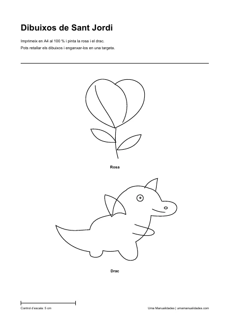

Dibuixos de Sant Jordi per pintar i imprimir
Imprimeix una rosa i un drac de Sant Jordi en un full A4. Pinta els dibuixos i fes-los servir per decorar una targeta o acompanyar un llibre.
Descarrega els dibuixos (PDF A4)

Com fer servir el full
- Imprimeix en A4 al 100 %. Comprova amb un regle que la marca de control fa 5 cm.
- Pinta la rosa i el drac. Si retalles les figures, deixa-hi una vora blanca estreta perquè destaquin sobre la cartolina.
- Plega la cartolina per la meitat i enganxa un dels dibuixos a la portada. Escriu-hi una dedicatòria per a la persona que rebrà el llibre.
Per completar el regal, descarrega la plantilla de punt de llibre de Sant Jordi o consulta més plantilles de manualitats.